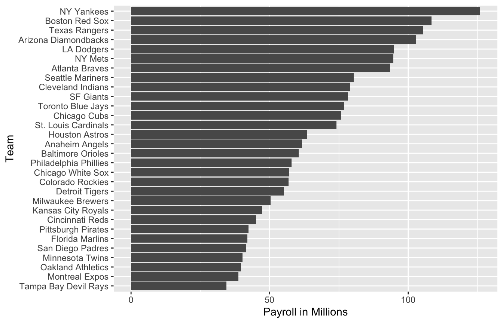
21 Multivariate Regression
Since Galton’s original development, regression has become one of the most widely used tools in data analysis.
The original regression approach, based on linear models, permits us to find relationships between two variables taking into account the effects of other variables that affect both.
Popular in fields where randomized experiments are hard to run, such as economics and epidemiology.
For example, consider estimating the effect of eating fast foods on life expectancy using data collected from a random sample of people in a jurisdiction.
Fast food consumers are more likely to be smokers, drinkers, and have lower incomes. Therefore, a naive regression model may lead to an overestimate of the negative health effect of fast food.
So how do we account for confounding in practice? In this chapter we learn how multivariate regression can help with such situations and can be used to describe how one or more variables affect an outcome variable. We illustrate with a real-world example in which data was used to help pick underappreciated players to improve a resource limited sports team.
21.1 Case study: Moneyball
Moneyball: The Art of Winning an Unfair Game is a book by Michael Lewis about the Oakland Athletics (A’s) baseball team and its general manager, the person tasked with building the team, Billy Beane.
Traditionally, baseball teams use scouts to help them decide what players to hire. Scouts tend to favor athletic players with observable physical abilities. For this reason, scouts tend to agree on who the best players are and, as a result, these players tend to be in high demand.
In 1995 the A’s team ownercut the budget drastically, leaving then general manager, Sandy Alderson (Billy Bean’s mentor), with one of the lowest payrolls in baseball. Alderson began using a statistical approach to find inefficiencies in the market. Billy Beane, became GM in 1998 and fully embraced a data approach.
As motivation for today’s lecture, we will pretend it is 2002 and try to build a baseball team with a limited budget, just like the A’s had to do. To appreciate what you are up against, note that in 2002 the Yankees’ payroll of $125,928,583 more than tripled the Oakland A’s $39,679,746:
21.2 Baseball basics
To see how regression will help us find undervalued players, we actually don’t need to understand all the details about the game of baseball, which has over 100 rules. Here, we distill the sport to the basic knowledge one needs to know how to effectively attack the data science problem.
The goal of a baseball game is to score more runs (points) than the other team.
Each team has 9 batters that have an opportunity to hit a ball with a bat in a predetermined order. After the 9th batter has had their turn, the first batter bats again, then the second, and so on.
Each time a batter has an opportunity to bat, we call it a plate appearance (PA). At each PA, the other team’s pitcher throws the ball and the batter tries to hit it.
The PA ends with an binary outcome: the batter either makes an out (failure) and returns to the bench or the batter doesn’t (success) and can run around the bases, and potentially score a run (reach all 4 bases).
Each team gets nine tries, referred to as innings, to score runs and each inning ends after three outs (three failures).
There is a lot of chance involved in a plate appearance.
There are several ways to succeed. Understanding this distinction will be important for our analysis. When the batter hits the ball, the batter wants to pass as many bases as possible. There are four bases with the fourth one called home plate. Home plate is where batters start by trying to hit, so the bases form a cycle.

A batter who goes around the bases and arrives home, scores a run.
We are simplifying a bit, but there are five ways a batter can succeed, that is, not make an out:
- Single - Batter hits the ball and gets to first base.
- Double (2B) - Batter hits the ball and gets to second base.
- Triple (3B) - Batter hits the ball and gets to third base.
- Home Run (HR) - Batter hits the ball and goes all the way home and scores a run.
- Bases on balls (BB) - the pitcher fails to throw the ball through a predefined area considered to be hittable (the strikezone), so the batter is permitted to go to first base.
While the batter is on base, the batter can also try to steal a base (SB). Here is an example of a stolen base.
All these events are kept track of during the season and are available to us through the Lahman package:
library(Lahman)21.3 No awards for BB

One of the first data-driven insights, made by Bill James, is that the batting average ignores BB, but a BB is a success.
James proposed we use the on base percentage (OBP) instead of batting average. He defined OBP as (H+BB)/PA which is simply the proportion of plate appearances that don’t result in an out, a very intuitive measure.
A player that gets many more BB than the average player might not be recognized if the batter does not excel in batting average. But is this player not helping produce runs?
No award is given to the player with the most BB. However, bad habits are hard to break and baseball did not immediately adopt OBP as an important statistic.
In contrast, total stolen bases were considered important and an awards given to the player with the most. But players with high totals of SB also made more outs as they did not always succeed.
Does a player with high SB total help produce runs? Can we use data science to determine if it’s better to pay for players with high BB or SB?
21.4 Base on balls or stolen bases?
Let’s explore if stolen bases or
library(tidyverse)
dat <- Teams |> filter(yearID %in% 1962:2002) |>
mutate(team = teamID, year = yearID, r = R/G,
singles = (H - X2B - X3B - HR)/G, doubles = X2B/G, triples = X3B/G,
hr = HR/G,
sb = SB/G, bb = BB/G) |>
select(team, year, r, singles, doubles, triples, hr, sb, bb)Now let’s start with a obvious question: does teams that hit more home runs score more runs? The visualization of choice when exploring the relationship between two variables is a scatter plot.
p <- dat |> ggplot(aes(hr, r)) + geom_point(alpha = 0.5)
p 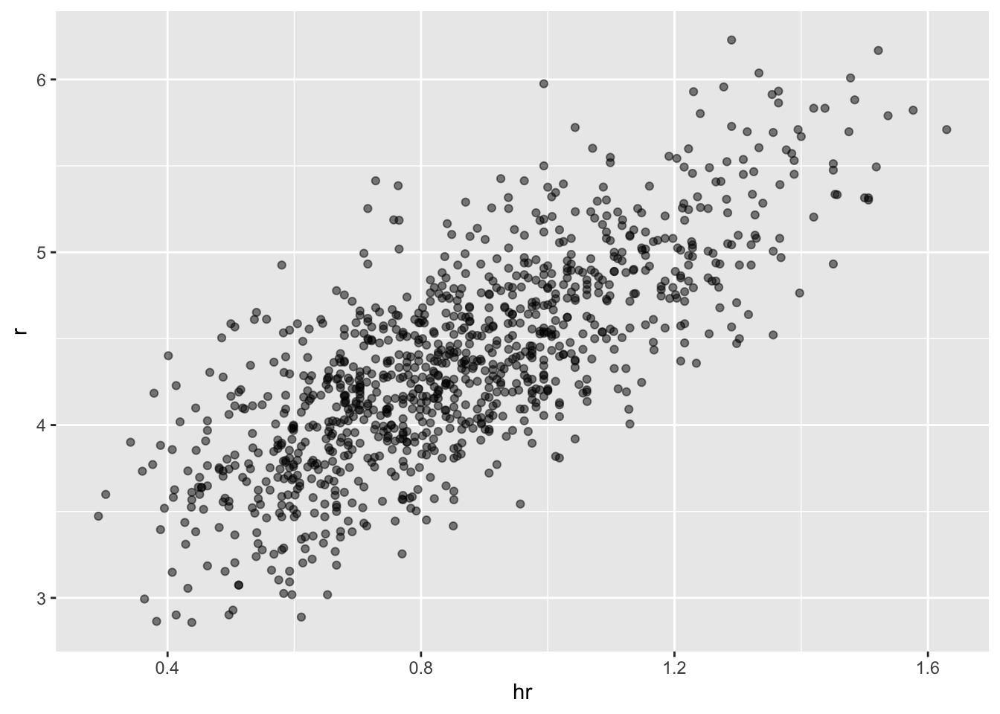
We defined p because we will add to this plot latter. The plot shows a strong association: teams with more HRs tend to score more runs. Now let’s examine the relationship between stolen bases and runs:
dat |> ggplot(aes(sb, r)) + geom_point(alpha = 0.5)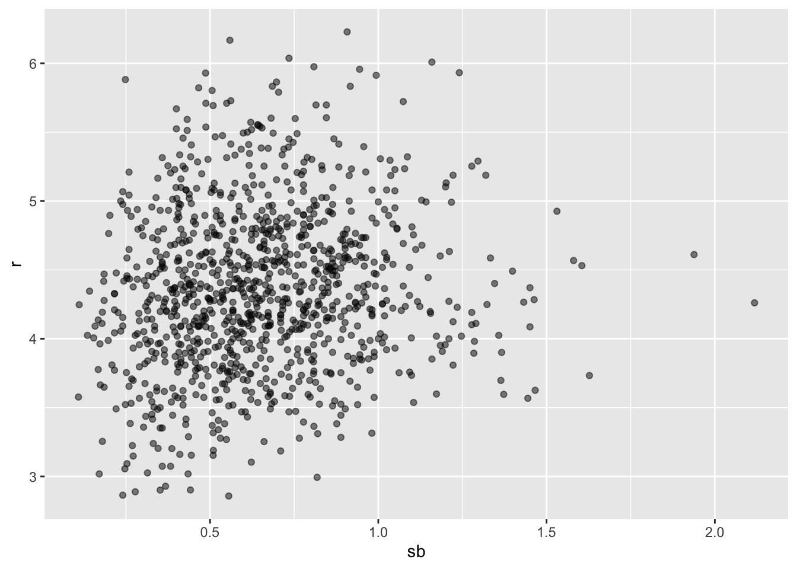
Here the relationship is not as clear. Finally, let’s examine the relationship between BB and runs:
dat |> ggplot(aes(bb, r)) + geom_point(alpha = 0.5)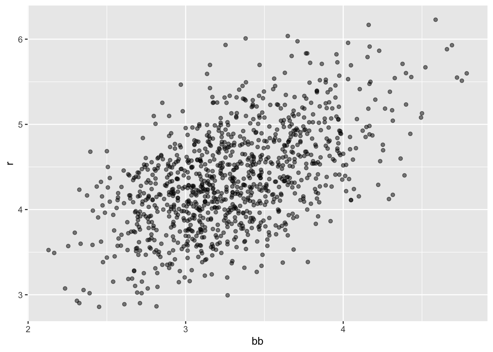
Here again we see a clear association. But does this mean that increasing a team’s BBs causes an increase in runs? One of the most important lessons you learn in this course is that association is not causation. In fact, it looks like BBs and HRs are also associated:
dat |> ggplot(aes(hr, bb)) + geom_point(alpha = 0.5)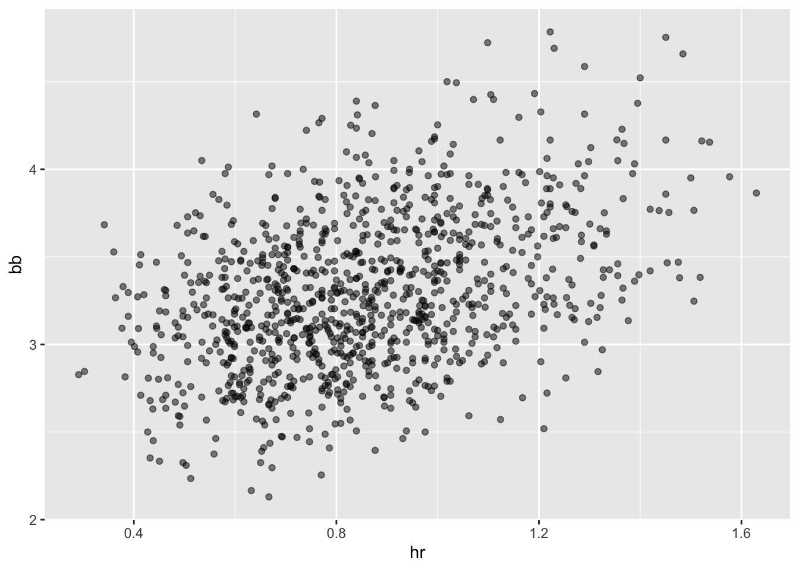
- We know that HRs cause runs because when a player hits a HR they are guaranteed at least one run. Could it be that HRs also cause BB and this makes it appear as if BB cause runs? When this happens we say there is confounding, an important concept we will learn more about throughout this chapter.
8 Linear regression will help us parse all this out and quantify the associations.
21.5 Regression applied to baseball statistics
Can we use regression with these data?
Does the bivariate normal model work?
dat |> mutate(z_hr = round(scale(hr))) |>
filter(z_hr %in% -2:3) |>
ggplot() +
stat_qq(aes(sample = r)) +
facet_wrap(~z_hr) 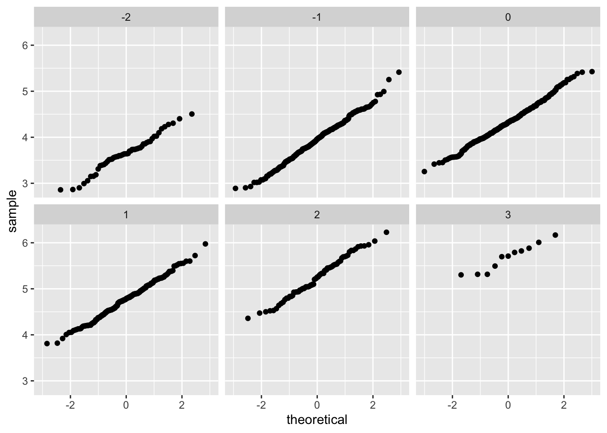
- Let’s use linear regression to predict the number of runs a team will score if we know how many home runs the team hits using regression:
hr_fit <- lm(r ~ hr, data = dat)$coef
p + geom_abline(intercept = hr_fit[[1]], slope = hr_fit[[2]])- Faster with
geom_smooth:
p + geom_smooth(method = "lm")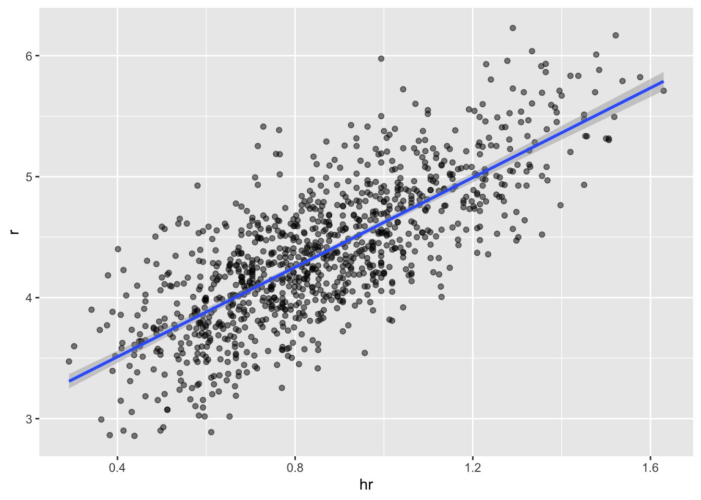
The slope is
lm(r ~ hr, data = dat)$coef[[2]][1] 1.851745So this tells us that teams that hit 1 more HR per game than the average team, score this coefficient amount of runs per game than the average team.
Not surprisingly, HR hitters are very expensive we will need to find some other way to increase wins. We will use linear regression.
21.6 The broom package
The broom package facilitates the use of R function such as lm within the tidyverse.
library(broom)
fit <- lm(r ~ bb, data = dat)
tidy(fit)# A tibble: 2 × 5
term estimate std.error statistic p.value
<chr> <dbl> <dbl> <dbl> <dbl>
1 (Intercept) 1.93 0.116 16.7 1.91e-55
2 bb 0.739 0.0348 21.2 1.90e-83We can add other important summaries, such as confidence intervals:
tidy(fit, conf.int = TRUE)# A tibble: 2 × 7
term estimate std.error statistic p.value conf.low conf.high
<chr> <dbl> <dbl> <dbl> <dbl> <dbl> <dbl>
1 (Intercept) 1.93 0.116 16.7 1.91e-55 1.70 2.15
2 bb 0.739 0.0348 21.2 1.90e-83 0.671 0.807Another useful function in broom:
glance(fit)# A tibble: 1 × 12
r.squared adj.r.squared sigma statistic p.value df logLik AIC BIC
<dbl> <dbl> <dbl> <dbl> <dbl> <dbl> <dbl> <dbl> <dbl>
1 0.304 0.303 0.493 451. 1.90e-83 1 -737. 1480. 1495.
# ℹ 3 more variables: deviance <dbl>, df.residual <int>, nobs <int>As an alternative to
summary(fit)
Call:
lm(formula = r ~ bb, data = dat)
Residuals:
Min 1Q Median 3Q Max
-1.34598 -0.34959 -0.00931 0.35370 1.60233
Coefficients:
Estimate Std. Error t value Pr(>|t|)
(Intercept) 1.92615 0.11556 16.67 <2e-16 ***
bb 0.73887 0.03477 21.25 <2e-16 ***
---
Signif. codes: 0 '***' 0.001 '**' 0.01 '*' 0.05 '.' 0.1 ' ' 1
Residual standard error: 0.4926 on 1036 degrees of freedom
Multiple R-squared: 0.3035, Adjusted R-squared: 0.3029
F-statistic: 451.5 on 1 and 1036 DF, p-value: < 2.2e-1621.7 Confounding
- Previously, we noted a strong relationship between Runs and BB. If we find the regression line for predicting runs from bases on balls, we a get slope of:
bb_slope <- lm(r ~ bb, data = dat)$coef[2]
bb_slope bb
0.7388725 So does this mean that if we go and hire low salary players with many BB, and who therefore increase the number of walks per game by 2, our team will score these many more runs per game? Association is not causation.
Note that if we compute the regression line slope for singles we get:
lm(r ~ singles, data = dat)$coef[2] singles
0.4324101 - The reason this happen is because of confounding. Here we show the correlation between HR, BB, and singles:
dat |> summarize(cor(bb, hr), cor(singles, hr), cor(bb, singles)) cor(bb, hr) cor(singles, hr) cor(bb, singles)
1 0.4064585 -0.1862848 -0.05126617- Explanation from experts: pitchers, afraid of HRs, will sometimes avoid throwing strikes to HR hitters.
21.8 Understanding confounding through stratification
Does the relationship between BB and R hold if we keep HR fixed?
dat |> mutate(hr_strata = round(hr, 1)) |>
filter(hr_strata >= 0.4 & hr_strata <= 1.2) |>
ggplot(aes(bb, r)) +
geom_point(alpha = 0.5) +
geom_smooth(method = "lm") +
facet_wrap(~hr_strata) 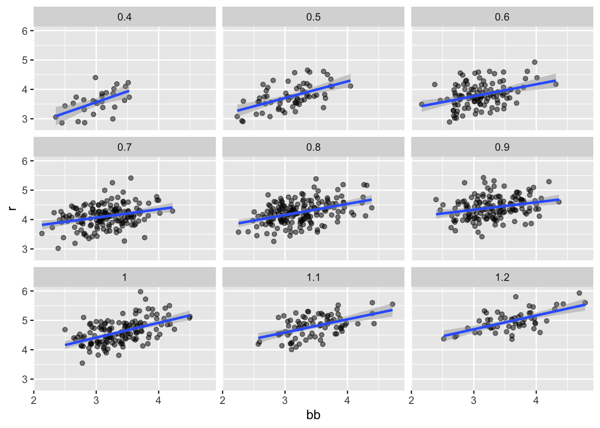
- Remember that the regression slope for predicting runs with BB was
round(bb_slope, 1) bb
0.7 - Once we stratify by HR, these slopes are substantially reduced:
dat |> mutate(hr_strata = round(hr, 1)) |>
filter(hr_strata >= 0.5 & hr_strata <= 1.2) |>
group_by(hr_strata) |>
reframe(tidy(lm(r ~ bb))) |>
filter(term == "bb")# A tibble: 8 × 6
hr_strata term estimate std.error statistic p.value
<dbl> <chr> <dbl> <dbl> <dbl> <dbl>
1 0.5 bb 0.566 0.110 5.14 3.02e- 6
2 0.6 bb 0.405 0.0984 4.12 7.46e- 5
3 0.7 bb 0.284 0.0717 3.96 1.13e- 4
4 0.8 bb 0.378 0.0638 5.92 1.75e- 8
5 0.9 bb 0.254 0.0762 3.33 1.08e- 3
6 1 bb 0.506 0.0720 7.02 9.46e-11
7 1.1 bb 0.444 0.0878 5.06 2.77e- 6
8 1.2 bb 0.469 0.0804 5.84 2.91e- 7The slopes are reduced, but they are not 0, which indicates that BBs are helpful for producing runs, just not as much as previously thought.
In fact, the values above are closer to the slope we obtained from singles,
round(lm(r~singles, data = dat)$coef[2],1)singles
0.4 - This is more consistent with our intuition since both singles and BB get us to first base, they should have about the same predictive power.
21.9 Multivariable regression
- It is somewhat complex to be computing regression lines for each strata. We are essentially fitting models like this:
\[ \mbox{E}[R \mid BB = x_1, \, HR = x_2] = \beta_0 + \beta_1(x_2) x_1 + \beta_2(x_1) x_2 \]
If we take random variability into account, the slopes in the strata don’t appear to change much. If these slopes are in fact the same, this implies that \(\beta_1(x_2)\) and \(\beta_2(x_1)\) are constants.
This in turn implies that the expectation of runs conditioned on HR and BB can be written like this:
\[ \mbox{E}[R \mid BB = x_1, \, HR = x_2] = \beta_0 + \beta_1 x_1 + \beta_2 x_2 \]
- In this analysis, referred to as multivariable regression, you will often hear people say that the BB slope \(\beta_1\) is adjusted for the HR effect.
8 Because the data is approximately normal and conditional distributions were also normal we are justified in using a linear model:
\[ Y_i = \beta_0 + \beta_1 x_{i,1} + \beta_2 x_{i,2} + \varepsilon_i \]
with \(Y_i\) runs per game for team \(i\), \(x_{i,1}\) walks per game, and \(x_{i,2}\).
- To use
lmhere, we need to let the function know we have two predictor variables. So we use the+symbol as follows:
tidy(lm(r ~ bb + hr, data = dat), conf.int = TRUE) # A tibble: 3 × 7
term estimate std.error statistic p.value conf.low conf.high
<chr> <dbl> <dbl> <dbl> <dbl> <dbl> <dbl>
1 (Intercept) 1.74 0.0820 21.2 3.38e- 83 1.58 1.90
2 bb 0.387 0.0269 14.4 8.41e- 43 0.334 0.440
3 hr 1.57 0.0488 32.1 1.39e-157 1.47 1.66 When we fit the model with only one variable, the estimated slopes were
lm(r ~ bb, data = dat)$coef[2] bb
0.7388725 lm(r ~ hr, data = dat)$coef[2] hr
1.851745 Note that when fitting the multivariable model both go down, with the BB effect decreasing much more.
Note
You are ready to do exercises 1-12 if you want to practice before continuing.
21.10 Building a baseball team
- We take somewhat of a “leap of faith” and assume that these five variables are jointly normal.
\[ Y_i = \beta_0 + \beta_1 x_{i,1} + \beta_2 x_{i,2} + \beta_3 x_{i,3}+ \beta_4 x_{i,4} + \beta_5 x_{i,5} + \varepsilon_i \]
with \(x_{i,1}, x_{i,2}, x_{i,3}, x_{i,4}, x_{i,5}\) representing BB, singles, doubles, triples, and HR respectively.
- Using
lm, we can quickly find the LSE for the parameters using:
fit <- dat |> filter(year <= 2001) |>
lm(r ~ bb + singles + doubles + triples + hr, data = _)Note we fit the model to data up until 2001, the year before we will construct our team.
Here are the resulting estimates:
tidy(fit, conf.int = TRUE) |> filter(term != "(Intercept)")# A tibble: 5 × 7
term estimate std.error statistic p.value conf.low conf.high
<chr> <dbl> <dbl> <dbl> <dbl> <dbl> <dbl>
1 bb 0.370 0.0119 31.2 1.00e-149 0.347 0.393
2 singles 0.517 0.0128 40.5 5.29e-213 0.492 0.543
3 doubles 0.775 0.0229 33.8 7.09e-168 0.730 0.820
4 triples 1.24 0.0778 15.9 4.62e- 51 1.09 1.39
5 hr 1.44 0.0248 58.1 1.98e-323 1.39 1.49 To see how well our metric actually predicts runs, we can predict the number of runs for each team in 2002 using the function predict, then make a plot:
dat |> mutate(r_hat = predict(fit, newdata = dat)) |>
filter(year == 2002) %>%
ggplot(aes(r_hat, r, label = team)) +
geom_point() +
geom_text(nudge_x = 0.1, cex = 2) +
geom_abline()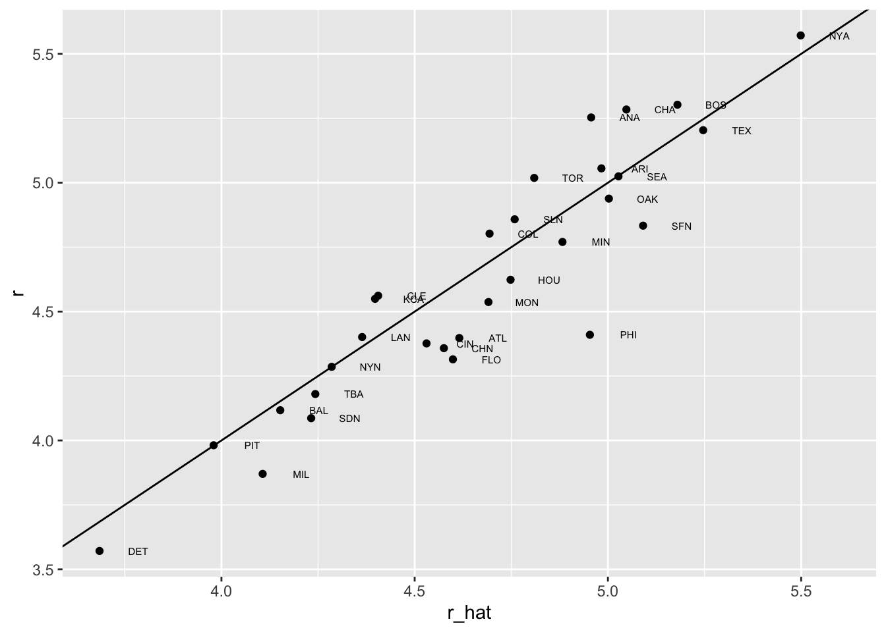
- This motivates the definition of a new statistic that is more related to run production:
b <- round(coef(fit), 2)
cat(b[1], "+",
b[2], "x BB +",
b[3], "x singles +",
b[4], "x doubles +",
b[5], "x triples +",
b[6], "x HR")-2.76 + 0.37 x BB + 0.52 x singles + 0.78 x doubles + 1.24 x triples + 1.44 x HR- We apply to statistic to each player but using a per plate appearance:
pa_per_game <- Batting |> filter(yearID == 2002) |>
group_by(teamID) |>
summarize(pa_per_game = sum(AB + BB)/162) |>
pull(pa_per_game) |>
mean()
players <- Batting |>
filter(yearID %in% 1997:2001) |>
group_by(playerID) |>
mutate(pa = BB + AB) |>
summarize(g = sum(pa)/pa_per_game,
bb = sum(BB)/g,
singles = sum(H - X2B - X3B - HR)/g,
doubles = sum(X2B)/g,
triples = sum(X3B)/g,
hr = sum(HR)/g,
avg = sum(H)/sum(AB),
pa = sum(pa)) |>
filter(pa >= 1000) |>
select(-g)
players$r_hat = predict(fit, newdata = players)- The distribution shows that there is wide variability across players:
hist(players$r_hat, main = "Predicted runs per game")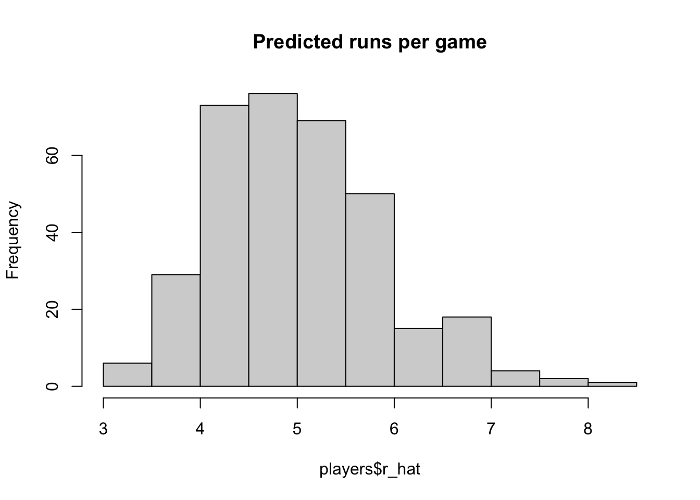
- To actually build the team, we will need to know their salaries as well as their defensive position.
players <- Salaries |>
filter(yearID == 2002) |>
select(playerID, salary) |>
right_join(players, by = "playerID")- Next add their defensive position
position_names <-
paste0("G_", c("p","c","1b","2b","3b","ss","lf","cf","rf", "dh"))
tmp <- Appearances |>
filter(yearID == 2002) |>
group_by(playerID) |>
summarize_at(position_names, sum) |>
ungroup()
pos <- tmp |>
select(all_of(position_names)) |>
apply(X = _, 1, which.max)
players <- tibble(playerID = tmp$playerID, POS = position_names[pos]) |>
mutate(POS = str_to_upper(str_remove(POS, "G_"))) |>
filter(POS != "P") |>
right_join(players, by = "playerID") |>
filter(!is.na(POS) & !is.na(salary))- Finally, we add their first and last name:
players <- People |>
select(playerID, nameFirst, nameLast, debut) |>
mutate(debut = as.Date(debut)) |>
right_join(players, by = "playerID")If you are a baseball fan, you will recognize the top 10 players according to our new metric:
players |> select(nameFirst, nameLast, POS, salary, r_hat) |>
arrange(desc(r_hat)) |> head(10) nameFirst nameLast POS salary r_hat
1 Barry Bonds LF 15000000 8.052460
2 Larry Walker RF 12666667 7.960583
3 Todd Helton 1B 5000000 7.403074
4 Manny Ramirez LF 15462727 7.352475
5 Sammy Sosa RF 15000000 7.201670
6 Jeff Bagwell 1B 11000000 7.053805
7 Mike Piazza C 10571429 6.993616
8 Jason Giambi 1B 10428571 6.916405
9 Edgar Martinez DH 7086668 6.912145
10 Jim Thome 1B 8000000 6.885270- On average, players with a higher metric have higher salaries:
players |> ggplot(aes(salary, r_hat, color = POS)) +
geom_point() +
scale_x_log10()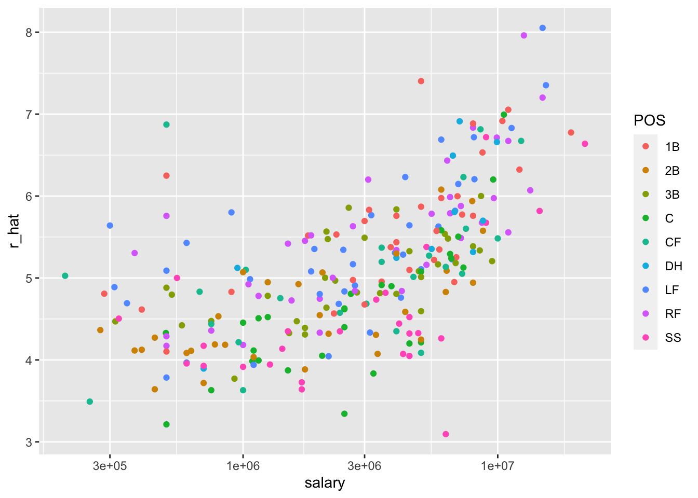
- We can search for good deals by looking at players who produce many more runs than others with similar salaries.
nameFirst nameLast POS salary r_hat
1 Todd Helton 1B 5000000 7.403074
2 Mike Piazza C 10571429 6.993616
3 Edgar Martinez DH 7086668 6.912145
4 Jim Edmonds CF 7333333 6.231373
5 Jeff Kent 2B 6000000 6.079064
6 Phil Nevin 3B 2600000 5.857409
7 Matt Stairs RF 500000 5.758631
8 Henry Rodriguez LF 300000 5.640563
9 John Valentin SS 550000 5.000417- We see that all these players have above average BB and most have above average HR rates, while the same is not true for singles and batting average. Here is a table with statistics standardized across players so that, for example, above average HR hitters have values above 0.
nameLast bb singles doubles triples hr
1 Helton 0.9088340 -0.214782777 2.64899973 -0.3105275 1.52212542
2 Piazza 0.3281058 0.423121711 0.20371605 -1.4181571 1.82536533
3 Martinez 2.1352215 -0.005170206 1.26490438 -1.2242578 0.80798171
4 Edmonds 1.0706548 -0.557910413 0.79123812 -1.1517126 0.97300516
5 Kent 0.2316321 -0.732290164 2.01139875 0.4483097 0.76586929
6 Nevin 0.3066863 -0.905122480 0.47876338 -1.1908955 1.19270552
7 Stairs 1.0996635 -1.512756207 -0.04608759 -1.1285395 1.12090808
8 Rodriguez 0.2011513 -1.596359532 0.33245570 -0.7823620 1.32027344
9 Valentin 0.1802855 -0.928706889 1.79403790 -0.4348410 -0.04524622
avg r_hat
1 2.6704562 2.54160226
2 2.1990055 2.09347964
3 2.2032836 2.00431446
4 0.8543566 1.25925673
5 0.7871932 1.09256504
6 0.1048721 0.84997981
7 -0.5608456 0.74187395
8 -0.6723416 0.61265636
9 -0.4717038 -0.0879388621.11 Exercises
We have shown how BB and singles have similar predictive power for scoring runs. Another way to compare the usefulness of these baseball metrics is by assessing how stable they are across the years. Since we have to pick players based on their previous performances, we will prefer metrics that are more stable. In these exercises, we will compare the stability of singles and BBs.
- Before we get started, we want to generate two tables. One for 2002 and another for the average of 1999-2001 seasons. We want to define per plate appearance statistics. Here is how we create the 2017 table. Keeping only players with more than 100 plate appearances.
library(Lahman)
dat <- Batting |> filter(yearID == 2002) |>
mutate(pa = AB + BB,
singles = (H - X2B - X3B - HR) / pa, bb = BB / pa) |>
filter(pa >= 100) |>
select(playerID, singles, bb)Now compute a similar table but with rates computed over 1999-2001.
- You can use the
inner_joinfunction to combine the 2001 data and averages in the same table:
dat <- inner_join(dat, avg, by = "playerID")Compute the correlation between 2002 and the previous seasons for singles and BB.
Note that the correlation is higher for BB. To quickly get an idea of the uncertainty associated with this correlation estimate, we will fit a linear model and compute confidence intervals for the slope coefficient. However, first make scatterplots to confirm that fitting a linear model is appropriate.
Now fit a linear model for each metric and use the
confintfunction to compare the estimates.We cam compute the correlation between mothers and daughters, mothers and sons, fathers and daughters, and fathers and sons (we randomly pick one offspring) using the following:
library(HistData)
set.seed(1)
galton_heights <- GaltonFamilies |>
group_by(family, gender) |>
sample_n(1) |>
ungroup()
cors <- galton_heights |>
pivot_longer(father:mother, names_to = "parent", values_to = "parentHeight") |>
mutate(child = ifelse(gender == "female", "daughter", "son")) |>
unite(pair, c("parent", "child")) |>
group_by(pair) |>
summarize(cor = cor(parentHeight, childHeight))Are these differences statistically significant? To answer this, we will compute the slopes of the regression line along with their standard errors. Start by using lm and the broom package to compute the slopes LSE and the standard errors.
Repeat the exercise above, but compute a confidence interval as well.
Plot the confidence intervals and notice that they overlap, which implies that the data is consistent with the inheritance of height being independent of sex.
Because we are selecting children at random, we can actually do something like a permutation test here. Repeat the computation of correlations 100 times taking a different sample each time. Hint: use similar code to what we used with simulations.
Fit a linear regression model to obtain the effects of BB and HR on Runs (at the team level) in 1971. Use the
tidyfunction in the broom package to obtain the results in a data frame.Now let’s repeat the above for each year since 1962 and make a plot. Use
summarizeand the broom package to fit this model for every year since 1962.Use the results of the previous exercise to plot the estimated effects of BB on runs.
Write a function that takes R, HR, and BB as arguments and fits two linear models:
R ~ BBandR~BB+HR. Then use thesummaryfunction to obtain theBBfor both models for each year since 1962. Then plot these against each other as a function of time.
21.12 Optional Exercises (will not appear in midterm)
- Since the 1980s, sabermetricians have used a summary statistic different from batting average to evaluate players. They realized walks were important and that doubles, triples, and HRs, should be weighed more than singles. As a result, they proposed the following metric:
\[ \frac{\mbox{BB}}{\mbox{PA}} + \frac{\mbox{Singles} + 2 \mbox{Doubles} + 3 \mbox{Triples} + 4\mbox{HR}}{\mbox{AB}} \]
They called this on-base-percentage plus slugging percentage (OPS). Although the sabermetricians probably did not use regression, here we show how this metric is close to what one gets with regression.
Compute the OPS for each team in the 2001 season. Then plot Runs per game versus OPS.
For every year since 1962, compute the correlation between runs per game and OPS; then plot these correlations as a function of year.
Note that we can rewrite OPS as a weighted average of BBs, singles, doubles, triples, and HRs. We know that the weights for doubles, triples, and HRs are 2, 3, and 4 times that of singles. But what about BB? What is the weight for BB relative to singles? Hint: the weight for BB relative to singles will be a function of AB and PA.
Note that the weight for BB, \(\frac{\mbox{AB}}{\mbox{PA}}\), will change from team to team. To see how variable it is, compute and plot this quantity for each team for each year since 1962. Then plot it again, but instead of computing it for every team, compute and plot the ratio for the entire year. Then, once you are convinced that there is not much of a time or team trend, report the overall average.
So now we know that the formula for OPS is proportional to \(0.91 \times \mbox{BB} + \mbox{singles} + 2 \times \mbox{doubles} + 3 \times \mbox{triples} + 4 \times \mbox{HR}\). Let’s see how these coefficients compare to those obtained with regression. Fit a regression model to the data after 1962, as done earlier: using per game statistics for each year for each team. After fitting this model, report the coefficients as weights relative to the coefficient for singles.
We see that our linear regression model coefficients follow the same general trend as those used by OPS, but with slightly less weight for metrics other than singles. For each team in years after 1962, compute the OPS, the predicted runs with the regression model and compute the correlation between the two as well as the correlation with runs per game.
We see that using the regression approach predicts runs slightly better than OPS, but not that much. However, note that we have been computing OPS and predicting runs for teams when these measures are used to evaluate players. Let’s show that OPS is quite similar to what one obtains with regression at the player level. For the 1962 season and after, compute the OPS and the predicted runs from our model for each player and plot them. Use the PA per game correction we used in the previous chapter:
What players have show the largest difference between their rank by predicted runs and OPS?